Re-cap on Storing Data
Variables / Objects / Arrays
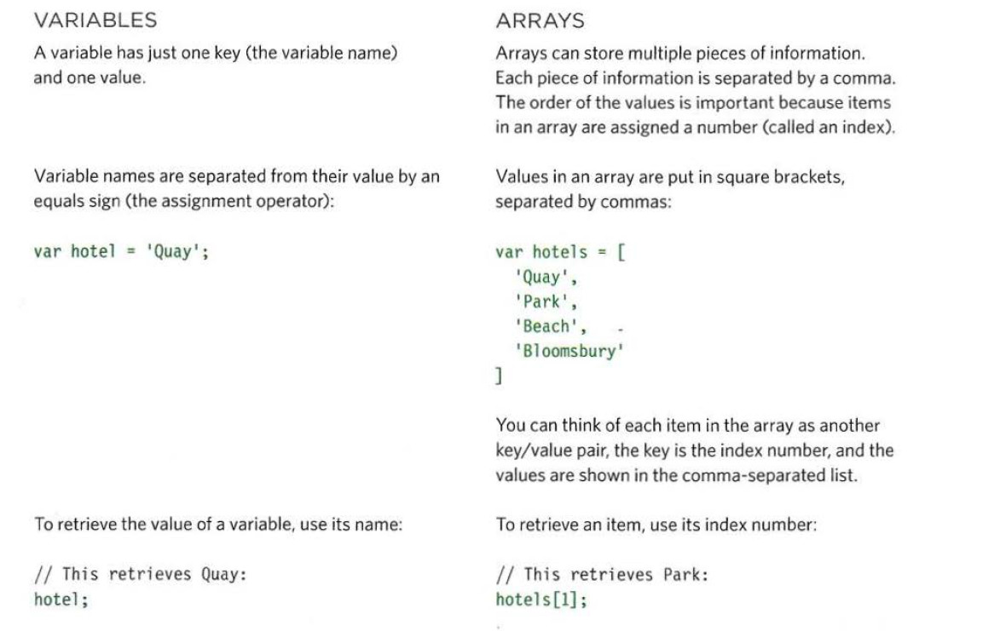
Image courtesy of Jon Duckett: "Javascript and jQuery", John Wiley & Sons Inc 2014
Re-cap on Storing Data Con't
Variables / Objects / Arrays con't
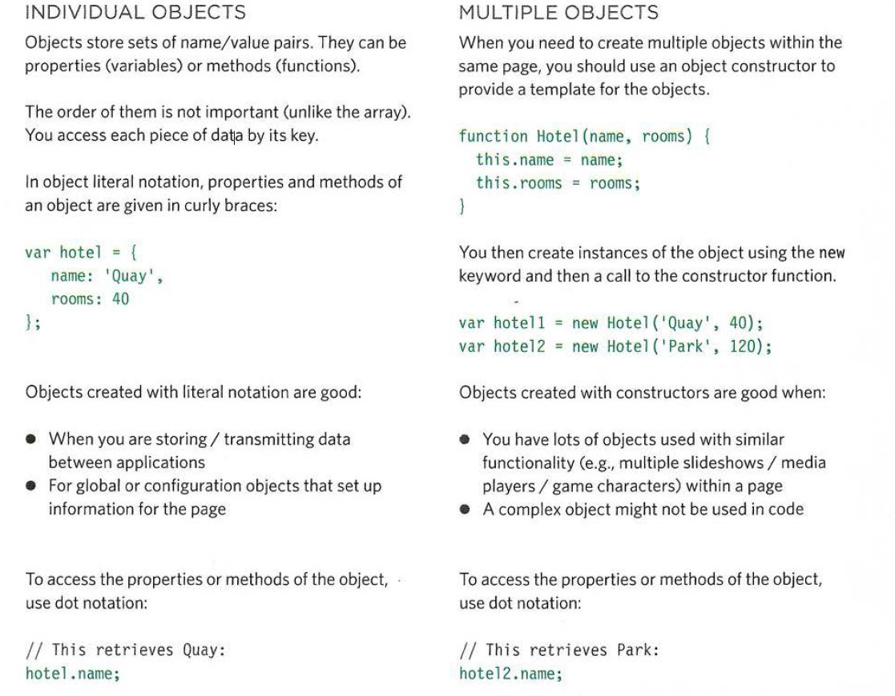
Image courtesy of Jon Duckett: "Javascript and jQuery", John Wiley & Sons Inc 2014
Arrays can store Objects - Objects can store Arrays Con't
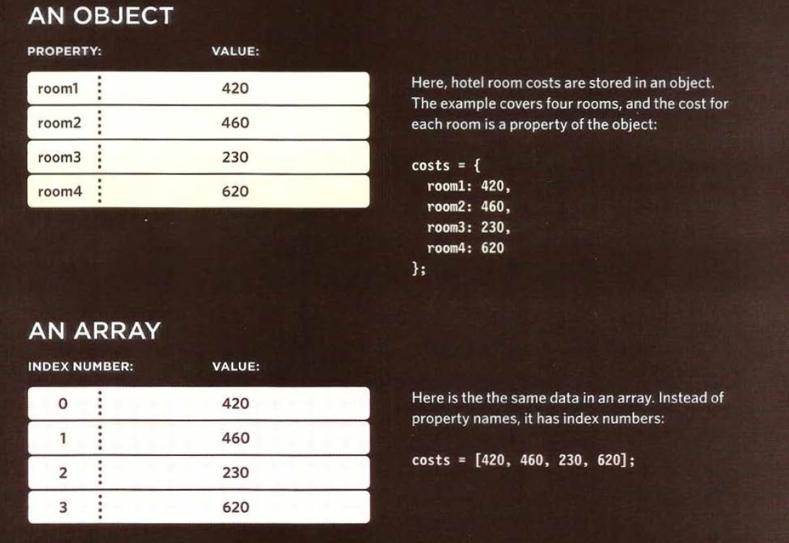
Arrays can store Objects - Objects can store Arrays Con't
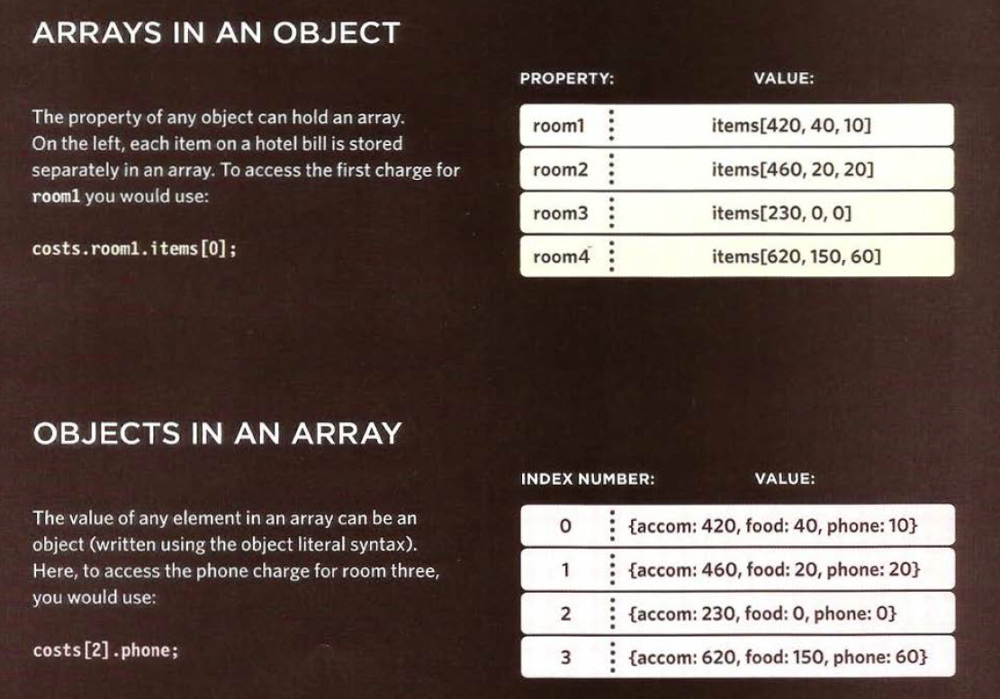
Adding and Removing properties from and Object
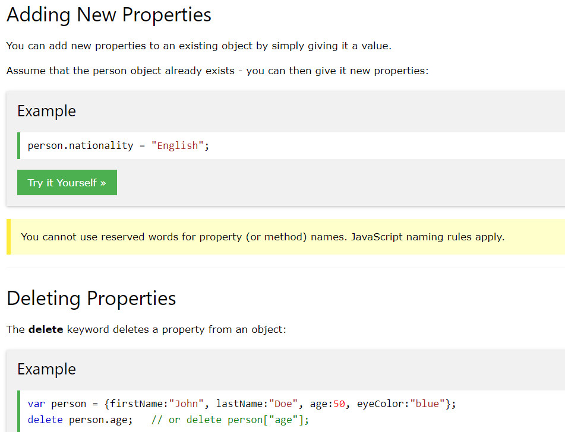
Adding and Removing items from an Array
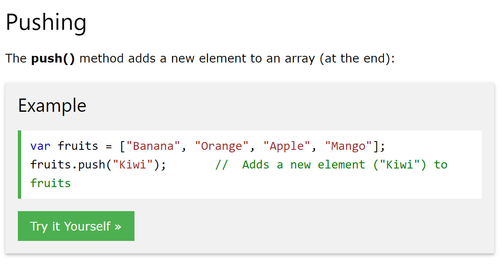
Adding and Removing items from an Array
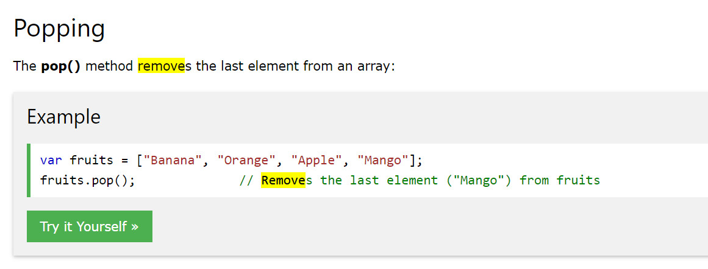
Functions
With js functions you can...
- Organize your code
- Control the code you write
- Create dynamic transitions and data formats
- Do almost anything
Functions
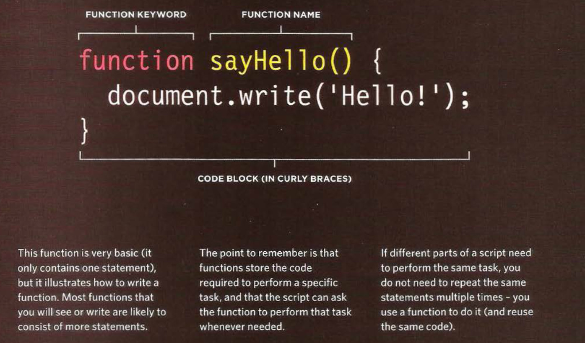
Image courtesy of Jon Duckett: "Javascript and jQuery", John Wiley & Sons Inc 2014
Invoking / Calling / Firing Functions
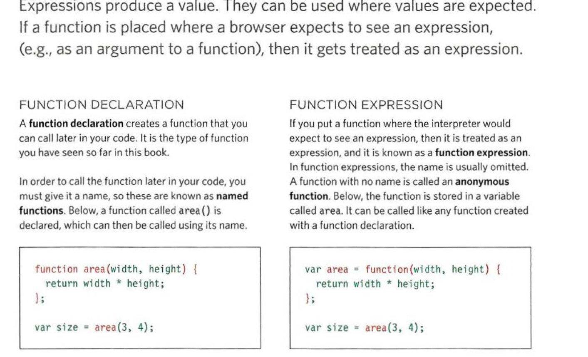
Image courtesy of Jon Duckett: "Javascript and jQuery", John Wiley & Sons Inc 2014
Parameters
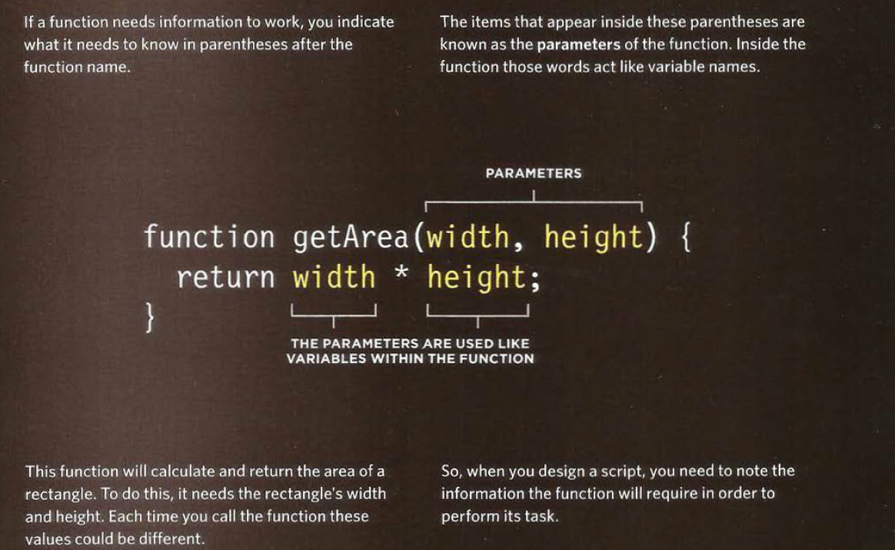
Image courtesy of Jon Duckett: "Javascript and jQuery", John Wiley & Sons Inc 2014
Arguments
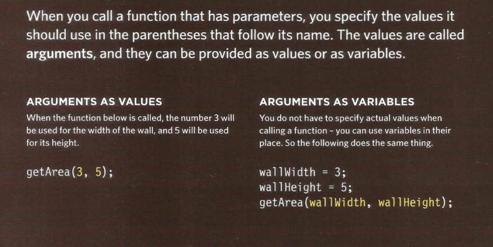
Image courtesy of Jon Duckett: "Javascript and jQuery", John Wiley & Sons Inc 2014
Returning Functions
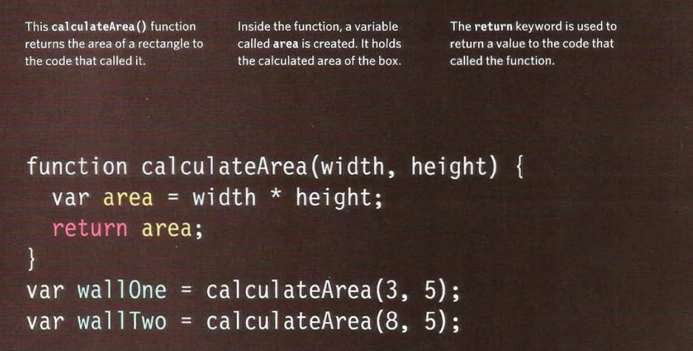
Image courtesy of Jon Duckett: "Javascript and jQuery", John Wiley & Sons Inc 2014
Returning Multiple Values
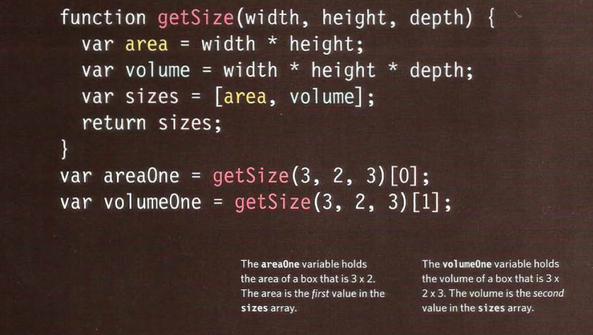
Image courtesy of Jon Duckett: "Javascript and jQuery", John Wiley & Sons Inc 2014
Types of function
Image courtesy of Jon Duckett: "Javascript and jQuery", John Wiley & Sons Inc 2014